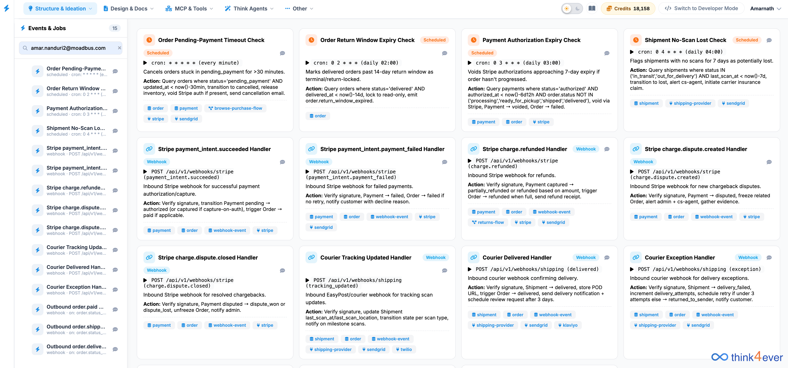
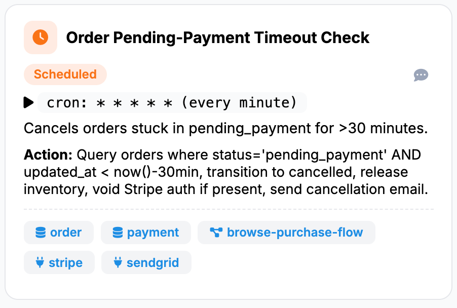

Events & Jobs
Welcome to the Events & Jobs management module of the platform. This module allows you to configure, monitor, and automate background processes that drive your application's state lifecycles.

Interface Overview
The workspace consists of two main sections:
- Left Navigation Panel: A searchable, scrollable sidebar showing a comprehensive directory of all configured events and cron jobs. It indicates the count of active triggers and lists shorthand endpoint details or cron frequencies.
- Main Workspace Grid: A canvas displaying interactive cards for each event or job. Each card specifies the execution type, precise triggering conditions, a technical operational description, and associated service tags.
Types of Tasks
The system categorizes asynchronous tasks into two primary execution formats, distinguished by their card headers and icons:
🕒 Scheduled Jobs (Cron Tasks)
These jobs run automatically at specific time intervals defined by traditional cron expressions. They are ideal for sweeping data tables, catching expired statuses, or cleaning up stale records.
- Visual Indicator: Orange clock icon with a "Scheduled" badge.
- Key Information Displayed: The exact cron syntax along with a human-readable execution frequency (e.g., every minute or daily 02:00).
🔗 Webhook Handlers (Event-Driven Triggers)
These handlers listen for real-time HTTP POST requests sent by external third-party microservices (such as payment gateways or shipping carriers) to instantly push updates to your application.
- Visual Indicator: Blue chain-link icon with a "Webhook" badge.
- Key Information Displayed: The dedicated API routing endpoint path (e.g., POST /api/v1/webhooks/stripe).
Core Functional Configurations
Based on the environment shown in the reference image, the system is split across several core operations:
A. Payment & Dispute Automation (Stripe Integration)
The system tracks payment intents and disputes through real-time webhook listeners and scheduled sweeps:
- Stripe payment_intent.succeeded Handler: Verifies the payment signature, transitions the payment state, and marks the attached order as paid.
- Stripe payment_intent.payment_failed Handler: Captures transaction declines to transition the order state and notify the customer.
- Stripe charge.dispute.created Handler: Automatically freezes related orders when a chargeback is initiated, alerting admins and customer service teams to gather evidence.
- Order Pending-Payment Timeout Check: A background cron running every minute to automatically cancel orders stuck in a pending payment state for more than 30 minutes, freeing up inventory.
B. Shipping & Logistics Automation
Tracks physical fulfillment updates by consuming webhooks from shipping providers or tracking aggregators:
- Courier Tracking Updated Handler: Processes incoming status scans to step through shipment milestones.
- Courier Delivered Handler: Stores the Proof of Delivery (POD) URL, updates the status to delivered, and schedules automated post-purchase customer follow-ups.
- Courier Exception Handler: Manages transit errors. It increments delivery attempt counts, schedules retries if under the threshold, or marks the status as returned to sender.
- Shipment No-Scan Lost Check: A daily cron job that flags shipments with no carrier scans for 7 days as potentially lost, initiating automated insurance claims.
Understanding Card Anatomy
Every card in the workspace grid breaks down complex backend logic into a highly readable template:

stripe and sendgrid indicates that
the code queries your payment processor and triggers automated transactional emails.
Best Practices for Modifying Events
- Filter with Context: Use the search bar in the left navigation panel to isolate tasks belonging to specific microservices or endpoints.
- Prevent State Deadlocks: Ensure that the conditions defined in your Scheduled Jobs (e.g., timing out an order) exactly align with the valid paths established within your State Lifecycle rules.
- Verify Webhook Signatures: When creating or modifying a Webhook Handler, always include a signature verification step in the Action definition to ensure inbound traffic originates securely from trusted providers like Stripe or your courier service.